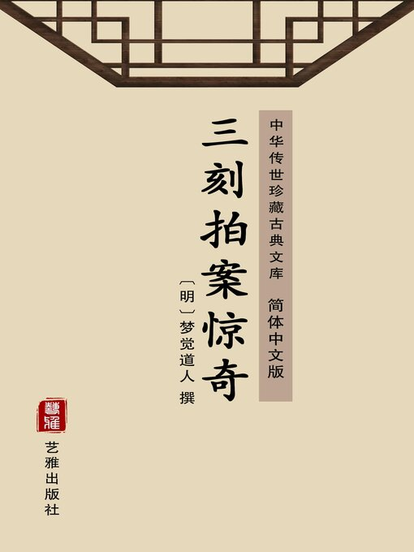

果然陈副使看了大喜，道这先生有功，对如夫人说。这如夫人听得儿子文理通，也大欢喜，供给极是丰厚。后边(陈)副使误认了儿子通，也曾大会亲友面课，自在那边看做，钱公布却令小厮，将文字粘在茶杯下送与他，照本謄录；一次陈公子诈嫌笔不堪写，馆中取笔，把文字藏在笔管中与他；把一个中、外都瞒得，陈公子是个通人了。但是钱公布这番心，一来是哄陈副(使)，希图固馆；二来意思要得陈公子感激，时常赍助，不料只博得一个家中供给齐整。便是陈公子也忘记了自己本色，也在先生面前妆起通来，谭文说理。先生时常在他面前念些雪诗儿，道：“家中用度不足，目下柴、米甚是不给，欲待预支些脩仪，不好对令尊讲。”
果然陈副使看了大喜，道这先生有功，对如夫人说。这如夫人听得儿子文理通，也大欢喜，供给极是丰厚。后边(陈)副使误认了儿子通，也曾大会亲友面课，自在那边看做，钱公布却令小厮，将文字粘在茶杯下送与他，照本謄录；一次陈公子诈嫌笔不堪写，馆中取笔，把文字藏在笔管中与他；把一个中、外都瞒得，陈公子是个通人了。但是钱公布这番心，一来是哄陈副(使)，希图固馆；二来意思要得陈公子感激，时常赍助，不料只博得一个家中供给齐整。便是陈公子也忘记了自己本色，也在先生面前妆起通来，谭文说理。先生时常在他面前念些雪诗儿，道：“家中用度不足，目下柴、米甚是不给，欲待预支些脩仪，不好对令尊讲。”#

陈公子不过答应得声：“正是呢。”也不说是学生处，先那几何。几番又道缺夏天衣服，故意来借公子衣服，要动他，公子又不买，钱公布心中便也怏怏，道：“这不识好的，须另用法儿敲他！”
一晚步出庄门，师徒两个绥缓的走，打从一个皮匠门首过，只听得一声道：“打酒拿壶去！”这声一似新莺出谷，娇鸟啼花，好不呖呖可听。师徒二人忙抬头看时，却是皮店厨边立着一个妇人，羞羞缩缩，掩掩遮遮，好生标致：
髻拥轻云堕，眉描新月湾。
嫣然有余媚，袅娜白家蛮。
天下最好看的妇人，是月下，灯下，帘下，朦朦胧胧，十分的美人有十二分！况村庄之中，走出一个年纪不上二十来，眉目森秀，身体娇柔，怎不动人？
钱公布道：“这妇人是吃盅儿的。”
陈公子道：“先生怎知道？”
钱公布道：“我只看见她叫打酒，岂不吃盅儿？”
陈公子道：“那秋波一转，甚是有情！”
钱公布道：“谁教你生得这等俏？”
也是合当有事，陈公子走不过十数间门面，就要转来，来时恰好皮匠打酒已回，妇人伸手来接，青苧衫内露出只白森森手来，岂不可爱！陈公子便是走不动般，伫了一会方去。
回到庄中，道：“好一个苧罗西子！却配这个麦粞包！”
钱公布道：“只因老天配得不匀，所以□□(常做)出事来。你想这样一个妇人，配这样一个蠢汉，(难)道不做出私情勾当？”
陈公子道：“只怕也有贞洁的。”
(钱)公布道：“我闲，哪个人心不好高，只因她爹、娘没眼，把来嫁了这厮；帽也不戴一顶，穿了一领油腻的布衫，补洞的水袜，上皮湾的宕口草鞋，终日手里拿了皮刀，口中衔了苧线，成什模样？未必不厌他！若见一个风流子弟，人物齐整，衣衫掩润，有不输心、输意的么？虽然是这样说，我们读书人，须要存些阴德，不可做这样事。”谁知陈公子晦气到了，恰是热血在心，不住想她，撇开先生，常自观望。
似此数日，皮匠见他光景，有些恼了，因是陈公子，不敢惹他。
只见这日钱公布着了一双旧鞋，拿了十来个钱，去到他家里打掌，把鞋脱与他，自坐着等。巧巧陈公子拜客回来，见了道：“先生在这里做什么？”
钱公布道：“在这里打掌。”
陈公子便捱到先生身边，连张几张，不见。钱公布道：“你先回去。”
那陈公子笑一笑道：“让你罢！”去了。
那皮匠便对钱公布道：“个是高徒么？”
钱公布道：“正是，是陈宪副令郎。”
皮匠便道：“个娘戏！阿答虽然不才，做个样小生意，阿答家叔洪仅八三，也是在学；洪论九十二合弟，见选竹溪巡司；就阿答房下，也是张堪舆小峰之女。咱日日在个向张望？先生借重对渠话话，若再来张看，我定用打渠，勿怪□□(粗鲁)！”
钱公布道：“老兄勿用动气，个愚徒极勿听说，阿答□(也)常劝渠，一弗肯改，须用本渠一介大手段。”
洪皮匠道：“学生定用打渠！”
钱公布道：“勿用，我侬有一计，特勿好说。”便沉吟不语。
皮匠道：“驼茶来，先生但说何妨。”
钱公布道：“渠侬勿肯听教诲，日后做向事出来，陈老先生毕竟见怪，渠侬公子，你侬打渠，毕竟吃亏。依我侬，只是老兄勿肯(读作孔——原注)！”
皮匠道：“但话。”
钱公市道：“个须吩咐令正哄渠进，老兄拿住子要杀，我侬来收扒，写渠一张服辨，还要诈渠百来两银子，渠侬下次定勿敢来！”
皮匠欢天喜地道：“若有百来两银子，在下定作东请老先生！”
钱公布道：“个用对分！”
皮匠道：“便四、六分罢！只陈副使知道咱伊！”
钱公布道：“有服辨在东怕渠？”此时鞋已缝完，两个又附耳说了几句分手。
到得馆中，陈公子道：“先生今日得趣了！”
钱公布道：“没什趣，女子果然好个女子，拿一盅茶出来请我，一发洁净、喷香！”
陈公子道：“果然？”
钱公布道：“真当！”
陈公子道：“这先生吃醋，打发我回，便同吃盅茶也不妨！”
钱公布道：“妇人倒是有情的，只是这皮匠有些粗鲁，不好惹他！”
陈公子道：“先生你本怕我括上手，把这话来矬我！”
钱公布道：“我好话，若惹出事来，须不关我事！”陈公子一笑，自回房去了。
次日，把脚下鞋子，拆断了两针线脚，便借名缝绽，到他家来。只见皮匠不在，叫了两声，妇人出来道：“不在家！”
陈公子看时，越发俊俏，道：“要他做些生活，不在，……大娘子胡乱替我缝一缝罢！”
那妇人笑道：“不会！”公子便脱下来递去，道：“大娘子看一看，不多几针！”妇人来接时，公子便捏上一把，甚是软滑柔润。
那妇人脸上一红，道：“相公，斯文家不要粗鲁！”公子也陪笑了一笑。
妇人道：“明日来罢！”
公子道：“明日晚来。”
妇人道：“晚，他在邻家吃酒未得回，饷午罢！”公子趑趄出门，妇人也丢一个眼色，缩进去了。
陈公子巴不得天明，又巴不得天晚，打扮得齐齐整整，戴了玉簪、金穵、金茉莉筌，一身纱罗衣服，袖子内袖了二、三两小锞儿，把一条白纱汗巾包了，对小厮道：“(我)出去就来，不必跟我。”迳到皮匠家来。
此时局已成□(了)，听得他叫，皮匠便躲了，教妇人在里面回报：“不在。”
(陈)公子听得声“不在”，便大踏步跳来。
妇人已怜他落局，暗把手摇道：“不要来！”那公子色胆如天，怎肯退步？妇人因丈夫吩咐，只得往楼上便跑。陈公子也跟上，一把抱住，便把银子渡去。
那妇人接了，道：“且去，另日约你来！”
陈公子道：“‘放着钟不打待铸？’”一连两个亲亲，伸手去扯小衣，只听得楼门口脚步响，回头看时，皮匠已拿了一把皮刀赶来了。
公子急了，待往楼窗跳下，一望楼又高，舍不得性命，心又慌，挪不得脚步，早被皮匠劈领一把，揿在地下。忙把刀来切时，却被妇人一把抢去，道：“王大哥，做什贼势！”
那皮匠便将来骑住，劈脸墩上两拳，公子便叫：“饶命！”
妇人又道：“打杀人也要偿命，不要蛮！”
公子又叫：“娘子救命！”只见凳上放着这妇人一双雪白好裹脚，被皮匠扯过来，将手脚捆住。这公子娇细人，惊得莫想挣一挣。
正捆时，只听得先生高高的唱着本待学过来，公子便高叫：“先生救我一救！”
皮匠道：“我也正要捉这蛮子一同送官！”便跳起身来，往下便走。
却好先生走到门前，这皮匠一(把)揪住，便是两掌。
钱公布道：“这厮这样可恶！”
皮(匠道)：“你这蛮子，教学生强奸人妇女，还要强嘴！”
钱公布道：“哪……哪有……有这……这样……样事？”
陈公子又叫：“先生快来！”一结、一纽，两个一同上楼。
钱公布道：“我教你不要做这样事！令尊得知，连我体面何在？”那皮匠又赶去陈公子身上狠打上几下，道：“娘戏个！我千难、万难讨得个老妈，你要戏渠？”
公子熬不得，道：“先生快救我！”
野花艳偏奇，狂且着贪想。
浪思赤绳系，竟落青丝网！
先生便问道：“老兄高姓？”
皮匠道：“我是洪三十六！”
先生便道：“洪兄，愚徒虽然弗好，实勿曾玷污令正。如今老兄已打了渠一顿，看薄面饶了渠，下次再弗敢来！”
皮匠道：“‘苍蝇戴网子，好大面皮’！虽是不曾到手，也吃渠亲了两个嘴，定用打杀！”
钱公布道：“罢，饶了渠，等渠再陪老兄礼罢！”
皮匠道：“‘打虎不倒被虎咬’。我弗打杀，定用送官，立介宗案！”
钱公布道：“到官也须连累尊正。”
皮匠摇得头落道：“也顾勿得！”
亏得妇人道：“我宁可死，决勿到官个！你怕后患，写渠一张(伏辩)，放了渠去罢。”
公子道：“一凭娘子！”
钱公布道：“洪兄放渠起来写。”皮匠只不做声。
钱公布道：“你还有什题目话么？”
皮匠道：“我还要三百两银子，饶渠性命！”
钱公布道：“哪得多呵！送五两折东陪礼……”
皮匠便跳起道：“放屁！你家老妈官与人戏，那三、五两便歇！”
钱公布道：“不要粗糙。”
公子捆缚不过，便道：“先生，加他些！”自十两起，直加至一百两，皮匠还做腔。
又亏得妇人道：“没廉耻，把老婆骗钱，还只顾要！”皮匠与公布怕做出马脚来，便住手。一时没现钱，把身上衣服，头上簪、穵都除去。先生又到馆中，将他衣、被、有七、八十两玩器、手卷，都押在他家，限三日内银赎，才放陈公子起来，手脚已麻了。又拿了一枝烂头笔，一张纸，要他写。公子没奈何，只得随着皮匠口里说写去：
立伏辨人陈某，不合于今四月廿三日，窥见邻人岑氏颇有姿色，希图奸宿，当被伊夫洪三十六拿住，要行送官。是某情急，央(求)亲人钱某求释，如□(或)不悛，仍行窥伺，听凭告理。立此伏辨是实。
写到“听凭告理”处，皮匠还念两句道：“如岑氏遭逼□(不)愤，致生事端，亦某抵偿。”陈公子也待下笔，倒是钱公布道：“这事断没有得，不消写。”不写了。公子与钱公(布)俱押了字，方得出门。
那陈公子满脸惭惶，钱公布□(又)路上动喃道：累他受气，累他陪口分拆，后生家干这样没要紧事！陈公子默默无言。到得房中，房中已(收)拾得罄尽。只得回家对他妻说，某好友要将田戤(银)百两，骗得出来。
果是先生去了半日。随着人把衣服、书玩都一一搬来。只说妇人留住了金穵、玉簪，说不曾有。
次日连皮匠夫妇俱已搬去。公子甚是欢喜，道：“省得拿这张伏辨在此劫持我。”不知里边有许多委曲。
廿四日陈公子回家去设处银子，他就暗地到皮匠家去，分了这些物件，只捡好玉瓶、古炉、好手轴袖回馆中，又吃了他一个肥东。
到了廿五日，陈公子拿了银，到馆交付钱公布，道：“先生，银子已有了，快去赎来，怕老父到馆不见这些玩物生疑！”
公布道：“我就去！只是你忒老实，怎都是纹银？你可收去十两，我只拿九十两去。包你赎来。”打发他出房，就将九十两银子收入书箱，把这几件玩物，带到皮匠家，慌慌张张的迳入里边。
皮匠道：“银子来了么？”
钱公布道：“还要银子？那日我这节事众小厮都吩咐了，独不曾吩咐得一个，被他竟对主母说了。主母告诉了陈副使，昨日便叫了陈公子回去，说他不肯，今日亲自府间下状，连公子都告在里边，说你设局诓诈，明日准准差公来。我想这事，怎好我得钱累你受害？故此把这些物件都归了你，把你作官司本，只不要扯我在里边！”
皮匠便跌脚道：“这原是你教我的，如今这些物件，到官都要追出去，把我何用？”
妇人道：“我叫你不要做这事，如今咱伊？还是你侬同我将这多呵物件，到陈衙出首便罢！”
钱公布道：“这‘拿头套枷戴’，勿可！勿可！陈老先生只为钱，你不若把个些物件还了陈公子，等渠还子爷，便无话哉，便公差来，你暂躲一躲便了！”
皮匠还没主意，到是妇人立定主意交还，只落得几两陈公子暗与她的银子，钱公布自着人搬回了。他夫妻两个计议，怕一到官要难为，苦使家私无些，便收拾做一担儿，两个逃往他乡，实何尝得这九十两银子，□□(勒他)簪、穵？
到午节边，先生回，陈公子把存下十两银子□□(分五)两送他，又送几件玩器，彼此相忘。直至午节后□□(复到)馆，师生越加相得。
一日两个在竹阴中闲谈，只见竹径两个人走将进来，要见钱相公与陈相公。
钱公布道：“是什么人？”两个俱披着衫儿与他相见。
那两人道：“小人是本府刑厅，有事来见二位相公。”
钱公布道：“刑厅有什事来见我们？”
那两人道：“小可唐突，钱相公不讳流、陈相公不讳镳么？”
钱公布道：“正是。”
两人道：“这等小可来得不差了！本主奉有按院批准洪三十六告词，特来奉请二位相公。”
钱公布道：“我们并不晓这事。”陈公子早已脸色惊白了。
只见年纪老成公差道：“前日那原告来请封条去封尸棺，两在下曾会来，道那个皮匠，陈相公倚势强奸他妻岑氏，以致身死。”
钱公布道：“‘捉奸见双’，有何凭证？”
那后生公差道：“岂有无凭之理，他道有陈相公的伏辨，买求的银子与钱相公过付；这事二位相公自与他分理，不干二在下事。”陈公子听得事逼真，低了头思想，不发一言。
公布道：“官差、吏差，来人不差，且备饭！”陈公子叫摆饭在水□(阁)，问(他)两个姓名：一个姓吴名江，号仰坡；一个姓(冯名)□(德)，号敬溪。两个略谦一谦，便坐上边。
在席上假斯(文)，不大吃，又掉文淡，道：“敞厅主极是公明，极重斯文，二位去见，必定周旋；况有令尊老爷分上，这蛮子三□□(十板)，一名老徒稳稳。二在下没有个不效劳，就是两(班)门上一应人，若是两在下管的，便没敢来做声，就(是)仵作，也听两在下说的。”
吃了半日，假起身告辞，钱公布假相留，冯敬溪道：“正是，扰了半日，牌也不送看一看，倒是白捕了。伙计看牌虽有个例，如今二位相公情面中，且先送看！”吴仰坡便在牌包中检出一张(纸)牌来，双手递与钱公布，公布便与陈公子同看，上(写)道：
绍兴府理刑厅为奸杀事：本月初六日，蒙浙江巡按御史马，批准山阴县告人洪三十六告词到厅，合行拘审。为此，仰役即拘后开人犯，赴厅研审(无)违。须至牌者。计拘：陈镳
钱流(俱被犯)张德昌岑岩(俱干证)，洪三十六（原告）差人吴江
钱公布看了，将来送还，道：“张、岑两个是什么人？”
吴仰坡道：“是他亲邻。”说罢，师生两个计议，送他差使钱，是六两作十两。
钱公布道：“拿不出。”加到九两作十五两。
钱公布递去，那吴仰坡递与冯敬溪，道：“伙计，二位相公盛意，你收了。”
那冯敬溪捏在手中，道：“多谢二位相公，不知是哪一位见惠的？两在下达一差非是小可；原是接老爷长差，又央门官与管家衬副，用了一二十两，才得到手，怎轻轻易易拿出这个包儿亲？也须看‘理刑厅’三个字！”
吴仰坡道：“伙计，这是看牌包儿，若说差使钱，毕竟我、你二人，一人一个财主！”
陈公子听了木呆，钱公布附耳道：“口大，怎么处？”
陈公子道：“但凭先生，今日且打发他去！”
钱公布道：“这不是什差使钱，因馆中有慢。”
吴仰坡便插一句道：“这等，明日陈爷那边去领赏罢！”
陈公子忙道：“不要去，只到这厢来！”
钱公布道：“因慢，以此折东，差使后日了落。”
吴仰坡道：“敝主甚是性急，洪三十六又在那厢催检尸，二位相公投到了若不出去，敝主出文书到学道申请，恐两在下也扶持不得！”
钱公布道：“且耽延两日！”
两个差人便起身作别，道：“这等后日会。”
饮若长鲸吸，贪如硕鼠能。
从教挽大海，溪壑正难平！
送了两个差人出去，钱公布连声叹气，道：“罢了，这前程定用送了！”又对陈公子道：“这事弄得拙，须求令岳、令尊解纷。”
陈公子道：“家父知道定用打杀，还是先生周支。”
公布道：“我怎周支得？须求孔方！如今若是买上不买下做，推官向贴肉摁，少也得千金；检尸仵作也得三百；个日铺堂也要百来两；再得二、三百两买嘱这边邻里可以胜他，这是一着。恐怕他又去别处告。若上和、下睦做，上边央了分上，下边也与洪三十六讲了，讨出了那张伏辨，买了硬证，说他自因夫妻争殴身死，招了诬，可也得千余金！”
陈公子道：“怎不见官，免致父亲得知方好。”
钱公布咬指道：“这大难！”想了又想，道：“有个机会，目今李节推行取，你如今匡得二百两银与差人，教他回你在京中令岳处，我游学苏州，里边还要一个三百金分上，不然节推疑我□□□。(们逃脱)，书房中也得二百时银，教他搁起莫催。洪三十六(处)得五、七百金，与他讲绝、私和，不要催状。待到新旧(交)接，再与差人、与书房讲，竟自抹杀，这可以不见官。但这项银子就要的，如何是好？还再得一个衙门中(熟)的去做事方好。”
陈公子道：“又去央人彰扬，只累先生罢！但急切如何得这银子？”
钱公布道：“这须不在我，你自家生计策，或者亲友处借贷些。”
陈公子道：“如今这些乡绅人家，欠他的如火之逼，借与他其冷如冰，谁人肯借？”
钱公布道：“自古道：‘儿女之情，夫妻之情。’你还到家中计议，或者令堂有些私房，令正嫁赀少可支持。后日差人就来了，被他逼到府前，四尊有令(尊体)面，讨保，这也还好。若道人命事大，一落监，这使费(还)多，你自要上紧！”
陈公子思量无计，只得回家。走到房，拿来茶水，只是不吃，闷闷昏昏，就望床中睡去。
他夫妇是过得极恩爱的，见他这个光景，便来问他道：“(是)着什事来？”
只见陈公子道：“是我作事差，只除一死！”
□(李)小姐道：“什事到死的田地？说来！”
陈公子□□□□(只是拭泪)不说。
李小姐道：“丫鬟，叫书童来我问他!”
陈公子道：“不要叫，只是说来妳先要怪我！”
李小姐道：“断不怪你！”陈公子便将前日被皮匠逼诈，如今他妻死告状，与先生计议事都说了。
李小姐也便惊呆，道：“因奸致死，是要偿命的，如何是好！”
陈公子越发流泪道：“我只是□(一)死！”
李小姐道：“若说丈人在家，教他与你父亲去讲，还是白分上，好做。若说要二、三千银子，便我有些，都将来生放，箱中不过一、二百，首饰一时典换不及，母家又都随任，无可掇挪，怎生来得？不若先将我身边银子，且去了落差人，待我与婆婆再处！”
可笑陈公子是娇养惯的，这一惊与愁，便果然病起，先将银子寄与钱公布，教他布置，自己夫、妻，在家中暗地着人倒换首饰，一两的也得五钱，折了好些。
那边钱公布又雪片般字儿来，道：“洪三十六又具状吊尸棺，房里要出违限。”真是焦杀！
这边陈公子生母杜氏，闻得他病，自到房来，媳妇迎着，问道：“为什忽然病起来？”
李小姐道：“是个死症，只是银子医得！”
杜氏道：“是什话？”
来到床边，看了儿子道：“儿！你什病？”陈公子也只不应，李小姐(要)说时，他又摇头。
杜氏道：“这什缘故？”
李小姐道：“嫡亲的母亲，便说何妨！”
便将前事，细细说了一遍，道：“故此我说是死症，只要银子。”
杜氏听了，不觉吃了一惊，道：“儿子，你真犯了死症了！我记得我随你父亲在关内做巡道时，也是一个没要紧后生，看得一个寡妇生得标致，串通一个尼姑，骗到庵中，欺奸了她。寡妇含羞自缢，她家告状，县官审实，解到你父亲那边，也有分上，你父亲怪他坏人节，致他死，与尼姑各打四十，登时打死，这是我知道的，怎今日你又做这事？你要银子，你父亲向做清官，怎有得到我？就你用钱挣得性命出来，父亲怪你败坏他门风，料也不轻放你！”叹一口气道：“我也空养了你一场！”立起身去了。
到晚间，千思万想，一个不快活起来，竟自悬梁缢死。正是：
舐犊心空(切)，扶危计莫筹。
可怜薄命妾，魂绕尽梁头。
到得次日，丫鬟见了，忙报陈副使，陈副使忙来看时，果是缢死，不知什么缘故。
忙叫两个服侍丫鬟亲问时，道：“不知！”再三要拷打，一个碧梧丫头道：“日间欢欢喜喜的，自看大相公回来，便这等不快；吃晚饭时，只叹一口气道：‘看他死不忍，要救他不能。’只这两句话！”
陈副使想道：“为儿子病，也不必如此。”正坐在楼上想，此时陈公子俱在房中来看，陈公子抚着尸在那边哭。只见书房中小厮书童，走到陈公子身边，见他哭，又缩了开去。直待哭完了，蹴到身边，递(一)个字与他，不期被陈副使看见，问道：“是什么字，这等紧要？”
书童道：“没什字。”
问公子，公子也道：“没有。”
陈副使便疑，拿过书童要打，只得说：“钱相公字儿。”
陈副使便讨来看，公子道：“是没紧要事。”副使定要逼来，却见上边写道：“差人催投文甚急，可即出一议！”
陈副使见了道：“我道必有什事！”问公子时，公子只得直奏。
陈副使听了大恼，将公子打上二、三十，要行打死，不留与有司正法。
却是李小姐跪下为他讨饶道：“亡过奶奶只这一点骨血，还求老爷留他！”
陈副使哭将起来，一面打点棺木殡殓，一面便想救儿子之计，问公子道：“妇人是本日缢死的么？”
公子道：“事后三日搬去，那时还未死。初十日差人来，说是死了，告状。”
副使道：“若是妇人羞愤自缢，也在本日，也不在三日之后。他如今移在哪里，可曾着人打听么？”
公子道：“不曾。”
副使道：“痴儿！你一定被人局(骗)了！”教把书童留在家中，要去请一个陪堂沈云峦来计议。
恰好此人，因知如夫人殁了来望，陈副使忙留他到书房中，那云峦问慰了。
陈副使便道：“云老，近日闻得不肖子在外的勾当么？”
沈云峦道：“令郎极好，勤学，再不见他到外边来，并没什勾当。”
陈副便道：“云老不要瞒我，闻得不肖子近日因奸致死一个妇人，现告按院，批在刑厅。”
沈云峦道：“是几时事？”
陈副使道：“是前月。”
沈云峦道：“这断没有的；‘一个霹雳天下响’若有这事，街坊上沸反道：‘陈乡宦公子因奸致死了某人家妇人’，怎耳朵里并不听得？”
陈副使道：“不肖子曾见牌来。”
沈云峦道：“这不难，晚生衙门极熟，一问便知。”
就接陈公子出来，问了差人名姓，模样，原告名字，硃语，便起身别了陈家父子，迳到府前，遇着刑厅书手旧相知徐兰亭，沈云峦道：“兰老一向！”两个作了揖。
沈云峦道：“连日得采？”
徐兰亭道：“没事。”
沈云峦道：“闻得陈副使乃郎人命事，整百(数)公事不兴？”
徐兰亭道：“没有。”
沈云峦道：“是按院批(的)。”
(徐)兰亭道：“目下按院批得三张：一张是强盗，上甲承(应)；一张是家财，中甲承应；我甲是张人命，是个争地界打杀的；没有这纸状字。”
云峦道：“有牌，差一个什吴江，老成朋友。”
兰亭道：“我厅里没有个吴江，只有个吴成，年纪三十来岁，麻子；一个新进来的吴得，也只廿五六岁；没有这人。莫不批在府、县？”
沈云峦说：“是贵厅。”
兰亭道：“敝厅实是没有。”
沈云峦得了这信，便来回覆陈副使，副使道：“这等，是光棍设局诓我犬子了！”
云峦道：“这差不多；看先生狠主张用钱，一定也有跷蹊！”
陈副使道：“他斯文人，断无这事。”
云峦道：“老先生不知，近日衙门打发，有加二除的，怕先生也便乐此，如今只拿住假差，便知分晓！”这是三日开丧，先生见书童不来，自假吊丧名色来催。这边陈公子，因父亲吩咐，假道有银几百两与先生拿去，却有吊丧的人，不得闲，先生便一边陪丧，一边守银。
不期这陈副使与沈云峦，带了几个家人在书房中。巧巧这两个假差走来，(看)园的道：“相公去见公子便来，二位里面请坐！”一进门便将门关上。
两个撞到花厅，只见陈副使在那厢骂道：“现这两个光棍，便是行假牌、逼死我夫人的么？”
那两个装的倒硬，道：“‘官差、吏差，来人不差。’现奉有牌！”
副使道：“拿牌来看。”
那小年纪的道：“厅上当官去看！”
沈云峦道：“你两个不要强，陈爷已见刑厅，道没有这事，怎么反来争？”这两个听了这一句，脸色皆青，做声不得。
陈副使便问：“洪三十六在哪边？”两人答应不出。
沈云峦道：“这等你二人怎么起局？”
陈副使叫声：“打！”这些管家便拿下老实一顿，衣帽尽行扯碎，搜了纸牌。
陈副使道：“你诈过多少银子？”
道：“只得六十两。”
沈云峦道：“令郎道一百二十，可见先生到得六十两。”
陈副使道：“这是先生串你们来的么？”两个被猜着了，也不回言。陈副使叫拴了，亲送刑厅，一边教公子款住先生。
到得刑厅□(阴)阳生递了帖，陈副使相见，陈副使道：“有两个光棍现持公祖这边假牌，说什‘人命’，吓耍小儿差使，诈去银一百二十两，西宾钱生员付证。如今又要打□□□(点衙门)与了落书房银三百两，小儿因此惊病，小妾因此自缢，要求公祖重处！”那四府唯唯，副使递过假牌，便即起身。
四尊回厅，就叫书房，拿这牌与看，道：“这是哪个写的牌？”
众书吏看了，道：“厅中原没这事，都不曾写过牌，便是花押，也不是老爷的；甲首中也没吴江、冯□(德)。”
四府听了，便叫陈乡宦家人与送来两个光棍□□(带进)道：“这牌是哪里来的？”
两人只叫：“该死！”
四府叫：“夹起来！”这些衙门人，原不曾得班里钱，又听得他假牌诈骗，一人奉承一副短夹棍，夹得死去。
那年纪小的道：“写牌是小的，硃笔是舅子钱生员动的。”
四府问道：“洪三十六在哪边？”
道：“并不曾认的，干证也是诡名。”
四府道：“这等你怎生起这诈局？”
道：“也是钱生员主张。”
四府道：“诈过多少银子？”
道：“银子一百二十两，钱生员拿去一半。”
四尊道：“有这衣冠禽兽！”哪一名是吴江?”
道：“小的并不是吴江，小的是钱生员妹夫杨成，他是钱生员妻兄商德。”
四尊道：“钱生员是个主谋了！如今在哪里？”
道：“在陈副使家。”四尊叫把这两人收监，差人拿钱生员。
陈管家领了差人，迳到家中，先把问的口词与副使说了，然后去见钱公布，道：“钱相公，外边两个县里差人要见相公！”
钱公布道：“怎么来到这里？”
起身来别陈公子，道：“事势甚紧，差人直到这里。”公子也只无言，陪宾送得出门，却不是那两人。
钱公布道：“二位素不相识。”
两个道：“适才陈副使送两个行假牌的来，扳有相公，特来奉请。”
钱公布慌了，道：“我是生员，须有学道明文，才拿得我。”
差人道：“拿是不敢拿相公，只请去见一见儿。”钱公布左推右推推不脱，只得去见四尊。
四尊道：“有你这样禽兽！人家费百余金请你在家，你驾妇人去骗他，已是人心共恶；如今更假官牌去，又是官法不容，还可留你在衣冠中？”
钱公布道：“洪三十六事，生员为他解纷，何曾骗他？”
四尊道：“假牌事(怎)么解？”
公布道：“假牌也不是生员行使。”
四尊道：“硃笔(是)谁动的？且发学收管，待我申请学道再问！”钱流再三恳求，四尊不理，自做文书申道。
次日陈副使来□(谢)，四尊道：“钱流薄有文名，不意无行一至于此，可见□□(如此)延师，不当徇名，只当访其行谊。如夫人之死，实由□□(此三)人，但不便检验，不若只坐以假牌。令郎虽云被□(局)，亦以不捡招衅，这学生还要委曲！”
陈副使道：“公祖(明)断，只小犬还求清目！”
四尊道：“知道，知道！”
过了数日，(学)道批道：“钱流设局阱人，假牌串诈，大干行(品)，(着即革)去衣巾，确审解道。”
四尊即拘了钱流，取出这□□□(两个假)差，先问他要洪三十六，杨成、商德并说：“不曾见(的)。”
(问)钱流，钱流道：“搬去不知去向。”四尊要卫护陈公子，(不)行追究，单就假牌上定罪。不消夹得，商德认了写(牌)，钱流也赖不去佥押，杨成、商德共分银一半，各有三十两赃，钱流一半，都一一招成。四尊便写审单道：
钱流，宫墙蹻跖也。硃符出之掌内，弄弟子如婴□(孩)；白镪敛之囊中，蔑国法如弁髦。无知稚子，床头(之)骨欲支；薄命佳人，梁上之魂几绕。即赃之多寡，□(乃)罪之重轻；宜从伪印之条，以惩奸顽之咎。商德□(躬)为写牌，杨成朋为行使，罪虽末减，一徒何辞！陈镳以狂淫而召衅，亦匍匐之可矜。宜俟洪三十六(到)官日结断。张昌、岑岩，俱系诡名，无从深究。
四尊写了，将三人各打三十。钱流道：“老爷！看斯文分上！”
四尊道：“还讲斯文？读书人做这样事！”画了供，取供房便成了招。钱流准行仗假牌、吓诈取财律，为首，充军；杨成、商德为从，拟徒；申解。三个罪倒轻了。当不(得)陈副使各处去讲，提学、守、巡三道，按察司，代巡各处讨解，少也是三十。连解五处，只商德挣得命出。可怜钱公布，用尽心机要局人、诈人，钱又入官，落得身死杖下。正是：
卧人还自阱，愚人只自愚。
青蚨竟何往？白骨委荒衢！
后来陈副使课公子时，仍旧一字不通，又知先生作弊误人。将来关在家中，从新请一个老成先生另教起。且喜陈公子也自努力，得进了学，科考到杭。
一日书童叫一个皮匠来上鞋子，却是面善。陈公子见了，道：“你是洪三十六？”
那皮匠一抬头，也认得是陈公子，便捣蒜似叩头道：“前日都是钱相公教的！相公这些衣服、香炉、花瓶各项，第三日钱相公来，说老爷告了状，小人一一央钱相公送还，并不曾留一件！”
陈公子道：“我有九十两银子与你。”
皮匠又磕头道：“九厘也不曾，见，眼睛出血！”
书童道：“你阿妈吊死了么？”
皮匠道：“还好好在家，相公要，就送相公。只求饶命！”
陈公子笑了又笑，道：“去，不难为你！”
皮匠鞋也不缝，挑了担儿飞(走)，书童赶上一把扯住，皮匠道：“管家，相公说饶我了！管家你若方便，我请你呷一壶！”
书童道：“谁要你酒吃？只替我缝完鞋去。”似牵牛上纸桥般，扯得转来，书童又把钱公布假牌事，一一说与。
那皮匠道：“这贼娘戏！他到得了银子，惊得我东躲、西躲两三年，只方才一惊可也小死，打杀得娘戏好！”陈公子又叫他不要吃惊，叫书童与了他工钱去了。方知前日捉奸，也是钱公布设局。
可见从今人果实心为儿女，须要寻好人，学好样，若只把耳朵当眼睛，只打听他考案，或凭着亲(以下残失)(补遗：友称扬，寻了个居傲的人，不把教书为事，日日奔走衙门，饮酒清谈，固是不好，寻了一个放荡的人，终日把玩耍为事，游山玩水，宿娼赌钱，这便关系儿子人品；若来一个奸险的，平日把假文章与学生哄骗父兄，逢考教他请人怀挟，干预家事，挑拨人父兄不和，都是有的。这便是一个榜样，人不可不知。)
wwＷ．lzuｏwen.com小/说/天/堂
第二十八回修斋邀紫绶说法骗红裙
壮夫志匡济，蠹简为津梁。
朝耕研田云，暮撷艺圃芳。
志不落安鲍，息岂在榆枋。
材借折弥老，骨以磷逾强。
宁逐轻薄儿，肯踵铜臭郎！
七幅豁盲者，三策惊明王。
杏园舒壮游，兰省含清香。
居令愆缪格，出俾凋瘵康。
斯不愧读书，良无惭垂黄。
穷达应有数，富贵真所忘。
毋为贪心炽，竟入奸人韁。
《五言排律》
(男)儿生堕地，自必有所建立，何必一顶纱帽？但只三□(考)道是奴才官，例监道是铜臭，这些人借了一块九折五分钱重债出门，又堂尊处三日送礼，五日送□(礼)，一念要捉本钱，思量银子，便没作为。贡举又道日暮途穷，岁贡捱出学门原也老迈，恩选孝廉岂无异才？却荐剡十之一，弹章十处八，削尽英雄之气。独是发甲，可以直行其志，尽展其才，便是招人忌嫉，也还经得几遭跌磕，进士断要做的。虽是这样说，也要尽其在己，把自己学问到识老才雄，悟深学富，气又足，笔又锐，是个百发百中人物，却又随流平进，听天之命，自有机缘。
如张文忠，五十四中进士，遭际世庙，六年拜相，做许多事业，何妨晚达？
就是嘉兴有个张巽解元，文字纰缪，房官正带在袖中，要与众人发一番笑话，不期代巡见了讨去，看做个奇卷，竟作榜首，是得力在误中。后来有一起大盗，拿银三千，央他说分上，在宾馆中遇一吏部，是本府亲家。吏部谭文，将解元文字极其指摘唾骂，骂了请教姓名，他正是解元，自觉惭愧，竟一肩为他说了这分上，是又得力在误中。人都道可以倖胜，又见这些膏粱子弟、铜臭大老得中，道可以财势求，只看崔铎等到手成空。还有几个买了关节，自己没科举，有科举又病，进不得场，转卖与人；买得关节被人盗去，干赔钱；买关节被中间□(作)事人换去，自己中不着，还有事露，至于破家丧身，被哄银子被抢，都是一点躁心，落了陷阱。又有一个，也不是买关节，只为一念名心未净，被人赚掇，不唯钱财被诓，抑且身家几覆。
话说湖州有个秀才姓张，弱冠进了学，家里田连阡陌，广有金银，呼奴使婢，极其富足。娶妻沈氏，也极有姿色，最妙是个不妬，房里也安得两个有四、五分姿色丫头，一个叫做兰馨，一个叫做竹翠。还有两个小厮，一个叫做绿绮，一个叫做龙纹，伏侍他。有时读书，却是：
柔绿侵窗散晓阴，牙签满案独披寻。
飞花落研参硃色，竹响萧萧和短吟。
倦时花径闲步：